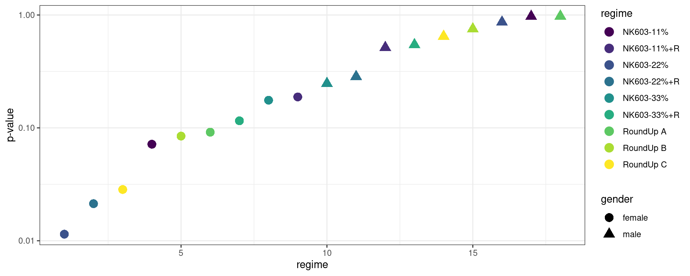
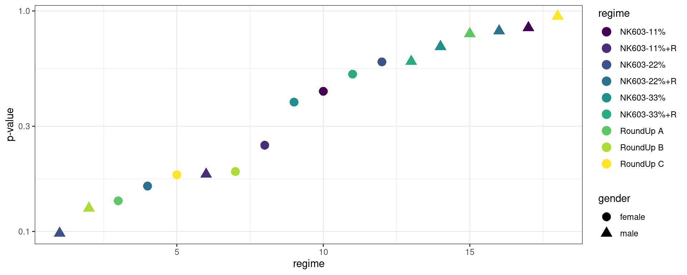
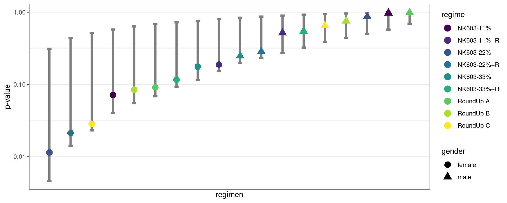
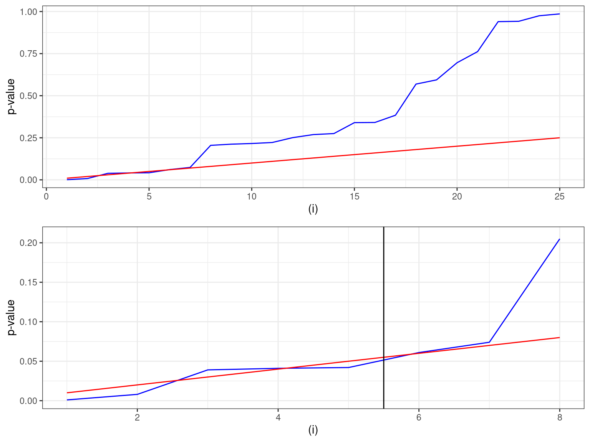

library(tidyverse)
library(gridExtra)
theme_set(theme_bw())Multiple Testing
Lecture Notes
Introduction
When we perform a large number of statistical tests, some will have p-values less than 0.05 purely by chance, even if all the null hypotheses are really true.
More precisely, if we do a large number m of statistical tests, and for m_{0\cdot} of them the null hypothesis is actually true, we would expect about 5% of the m_{0\cdot} tests to be significant at the 0.05 level, just due to chance: these significant results are false discoveries (or false positives). On the other hand, if some alternative hypothesis are true, we can miss some of them: these non significant results are false negatives.
\begin{array}{c|c|c|c} & \text{Null hypothesis true} & \text{Alternative hypothesis true} & \\ \hline \text{Test non significant} & m_{00} & m_{10} & m_{\cdot 0} \\ \hline \text{Test significant} & m_{01} & m_{11} & m_{\cdot 1} \\ \hline & m_{0 \cdot} & m_{1 \cdot} & m \end{array}
If important conclusions and decisions are based on these false positives, it is then important to control the family-wise error rate (FWER):
- the family-wise error rate is the probability of making one or more false discoveries, or type I errors when performing multiple hypotheses tests
FWER = \mathbb{P}(m_{01}\geq 1)
When true positives are expected, it is possible to miss some of them. We then necessarily need to accept false positives if we want to limit the number of these false negatives. It is important in such situation to control the false discovery rate (FDR)
- The false discovery rate (FDR) is the expected proportion of false discoveries among the discoveries
FDR = \mathbb{E}\left(\frac{m_{01}}{m_{01} + m_{11}}\right) = \mathbb{E}\left(\frac{m_{01}}{m_{\cdot1} }\right) Several procedures exist for controlling either the FWER or the FDR.
1 Distribution of the p-values
1.1 Introduction
The health effects of a Roundup-tolerant genetically modified maize, cultivated with or without Roundup, and Roundup alone, were studied during a 2 years study in rats.
For each sex, one control group had access to plain water and standard diet from the closest isogenic non-transgenic maize control; six groups were fed with 11, 22 and 33% of GM NK603 maize either treated or not with Roundup. The final three groups were fed with the control diet and had access to water supplemented with different concentrations of Roundup.
A sample of 200 rats including 100 males and 100 females was randomized into 20 groups of 10 rats of the same sex. Within each group, rats received the same diet. For each sex, there are therefore nine experimental groups and one control group.
The file
See the opinion of the Haut Conseil des Biotechnologies for more information about this study.
Here is a summary of the data,
survival <- read_csv("../../data/ratSurvival.csv") %>% mutate_if(is.character, factor)
survival %>% rmarkdown::paged_table()levels(survival$regimen) [1] "control" "NK603-11%" "NK603-11%+R" "NK603-22%" "NK603-22%+R"
[6] "NK603-33%" "NK603-33%+R" "RoundUp A" "RoundUp B" "RoundUp C" 1.2 Single comparison between 2 groups
One objective of this study is the comparison of the survival time between the control group and the experimental groups.
Consider for instance the control group of females
time_control <- survival %>%
filter(regimen == "control", gender == "female") %>% pull(time)
time_control [1] 540 645 720 720 720 720 720 720 720 720Only 2 rats of this group died before the end of the experiment. On the other hand, 7 females of the group fed with 22% of maize NK693 died during the experiment.
time_test <- survival %>%
filter(regimen == "NK603-22%", gender == "female") %>% pull(time)
time_test [1] 290 475 480 510 550 555 650 720 720 720A negative effect of the diet on the survival means that the rats of the experimental group tend to die before those of the control group. Then, we would like to test
\begin{aligned} & H_0: \ "\text{the NK603 22\% diet has no effect on the survival of female rats }"\\ \text{versus } & H_1: \ "\text{the NK603 22\% diet leads to decreased survival time for female rats}"\\ \end{aligned}
In terms of survival functions, that means that, under H_1, the probability to be alive at a given time t is lower for a rat of the experimental group than for a rat of the control group. We then would like to test
\begin{aligned} & H_0: \ ``\mathbb{P}(T_{\rm test}>t) = \mathbb{P}(T_{\rm control}>t), \text{ for any } t>0" \\ \text{versus } & H_1: \ ``\mathbb{P}(T_{\rm test}>t) < \mathbb{P}(T_{\rm control}>t), \text{ for any } t>0" \end{aligned}
Because of the (right) censoring process, we cannot just compare the mean survival times using a t-test. On the other hand, we can use the Wilcoxon-Mann-Whitney test which precisely aims to compare the ranks of the survival times in both groups.
wilcox.test(time_test, time_control, alternative="less")
Wilcoxon rank sum test with continuity correction
data: time_test and time_control
W = 22, p-value = 0.01144
alternative hypothesis: true location shift is less than 0Here, the p-value should lead us to reject the null hypothesis and conclude that 22% of the GM maize in the diet has a negative effect on the survival.
1.3 A single comparison… among many others
Should we really accept this conclusion as it stands? No, because we don’t know the whole story… Remember that there are 9 experimental groups for each sex. Then, 18 comparisons with the control groups are performed.
do_all_comparisons <- function(data) {
map(levels(data$gender),
function(g) {
control <- filter(data, regimen == "control" & gender==g) %>% pull(time)
regimes <- setdiff(levels(data$regimen), "control")
map(regimes, function(regime) {
test <- filter(data, gender == g & regimen == regime) %>% pull(time)
wt <- wilcox.test(test, control, alternative = "less")
data.frame(
gender = g,
regime = regime,
statistic = unname(wt$statistic),
p.value = wt$p.value
)
}) %>% bind_rows()
}) %>% bind_rows() %>% arrange(p.value)
}
all_comparisons <- do_all_comparisons(survival)
all_comparisons %>% rmarkdown::paged_table(options = list(rows.print = 18))Let us plot the ordered p-values:
Show the code
all_comparisons %>%
ggplot() + geom_point(aes(x = 1:18, color = regime, y = p.value, shape = gender), size=4) +
scale_y_log10() + xlab("regime") + ylab("p-value") + scale_color_viridis_d() + theme_bw()
If we then decide to only report the largest observed differences, associated to the smallest p-values, how can we conclude that these differences are statistically significant?
1.4 Permutation test
Permutation test
A permutation test (also called a randomization test) is a type of statistical significance test in which the distribution of the test statistic under the null hypothesis is obtained by calculating all possible values of the test statistic under rearrangements of the labels on the observed data points. If the labels are exchangeable under the null hypothesis, then the resulting tests yield exact significance levels. Prediction intervals can also be derived.
In our example, imagine that the null hypothesis is true. We can then randomly exchange the labels (i.e. the regimen) and perform the 18 comparisons between the experimental groups and the control groups.
permuted_data <- survival %>%
split(.$gender) %>%
map(mutate, regimen = sample(regimen)) %>%
bind_rows()
do_all_comparisons(permuted_data) %>% rmarkdown::paged_table()The test statistics and the p-values now really behave how they are supposed to behave under the null hypothesis. Let us plot this:
Show the code
do_all_comparisons(permuted_data) %>%
ggplot() + geom_point(aes(x = 1:18, color = regime, y = p.value, shape = gender), size=4) +
scale_y_log10() + xlab("regime") + ylab("p-value") + scale_color_viridis_d() + theme_bw()
Is this really different from the plot we obtained before, with the original data? To answer this question we repeat the same experiment using many different permutations. We will be able to estimate the m distributions of the m test statistics as well as the m distributions of the m p-values under the null hypothesis.
n_replicates <- 1000
res <- parallel::mclapply(1:n_replicates, function(i) {
permuted_data <- survival %>%
split(.$gender) %>%
map(mutate, regimen = sample(regimen)) %>%
bind_rows()
do_all_comparisons(permuted_data) %>%
select(statistic, p.value) %>% mutate(simu = i)
}, mc.cores = parallel::detectCores()) %>% bind_rows()We can estimate, for instance, prediction intervals of level 90% for the m=18 ordered p-values
quantiles_pvalues <-
split(res, res$simu) %>%
map(pull, p.value) %>%
map(sort) %>% bind_rows() %>%
apply(1, quantile, c(0.05, 0.5, 0.95)) %>% t() %>% as_tibble() %>%
setNames(c("low","median","up")) %>% mutate(rank = 1:n())and plot them, with the original p-values
Show the code
quantiles_pvalues %>% ggplot() +
geom_errorbar(aes(x = rank, ymin = low, ymax = up), width=0.2, linewidth=1.5, colour="grey50") +
scale_y_log10() + xlab("regimen") + ylab("p-value") + scale_x_continuous(breaks=NULL) +
geom_point(data = all_comparisons, aes(x = 1:18, color = regime, y = p.value, shape=gender), size=4) +
theme_bw()
Here, all the p-values, including the smallest ones, belong to the 90% prediction intervals: all the observed p-values behave individually how they are expected to behave under the null hypothesis.
In particular, when 18 comparisons are performed, it’s not unlikely under the null hypothesis to obtain a smallest p-value less than or equal to the observed one (0.011).
The probability of such event can easily be estimated by Monte Carlo simulation. Let p_{(1),\ell} be the smallest p-value obtained from the \ell-th replicate of the Monte Carlo. Then,
\mathbb{P}\left(p_{(1)} \leq p_{(1)}^{\mathrm{obs}}\right) \approx \frac{1}{L} \sum_{\ell=1}^{L} \mathbf{1}_{\left\{p_{(1),\ell} \leq p_{(1)}^{\mathrm{obs}}\right\}}
stat_rank1 <- split(res, res$simu) %>% map_dbl(function(x) sort(x$statistic)[1])
mean(stat_rank1 < all_comparisons$statistic[1])[1] 0.1532 Multiple testing procedures
2.1 Controlling Family Wise Error Rate
The Bonferroni correction
Imagine that we perform m comparisons and that all the m null hypotheses are true, i.e. m=m_{0\cdot}.. If we use the same significance level \alpha_m for the m tests, how should we choose \alpha_m in order to control the family-wise error rate (FWER)?
\begin{aligned} {\rm FWER} &= \mathbb{P}(m_{01}\geq 1) \\ &= 1 - \mathbb{P}(m_{01}= 0) \\ &= 1 - (1-\alpha_m)^m \end{aligned}
Then, if we set FWER=\alpha, the significance level for each individual test should be \begin{aligned} \alpha_m &= 1 - (1-\alpha)^{\frac{1}{m}} \quad \quad (\text{Sidak correction})\\ & \simeq \frac{\alpha}{m} \quad \quad (\text{Bonferroni correction}) \end{aligned}
Let p_k be the p-value of the k-th test. Using the Bonferroni correction, the k-th test is significant if p_k \leq \alpha_m \quad \Longleftrightarrow \quad m \, p_k \leq \alpha We can then either compare the original p-value p_k to the corrected significance level \alpha/m, or compare the adjusted p-value p_k^{\rm (bonferroni)} =\min(1, m \, p_k) to the critical value \alpha.
m <- nrow(all_comparisons)
all_comparisons$p.value_bonferonni <- pmin(1, all_comparisons$p.value * m)
all_comparisons %>% rmarkdown::paged_table()Using the Bonferroni correction, none of the 18 comparisons is significant.
Remark: the function p.adjust proposes several adjustements of the p-values for multiple comparisons, including the Bonferroni adjustment:
p.adjust(all_comparisons$p.value, method = "bonferroni") [1] 0.2058803 0.3837141 0.5121818 1.0000000 1.0000000 1.0000000 1.0000000
[8] 1.0000000 1.0000000 1.0000000 1.0000000 1.0000000 1.0000000 1.0000000
[15] 1.0000000 1.0000000 1.0000000 1.0000000The Bonferroni correction is appropriate when a single false positive in a set of tests would be a problem. It is mainly useful when there are a fairly small number of multiple comparisons and very few of them might be significant. The main drawback of the Bonferroni correction is its lack of power: it may lead to a very high rate of false negatives.
2.2 Controlling the False Discovery Rate
2.2.1 Detecting associations
(Example from Handbook of Biological Statistics)
Garcı́a-Arenzana et al. (2014) tested associations of 25 dietary variables with mammographic density, an important risk factor for breast cancer, in Spanish women. They found the following results
data <- read_csv("../../data/dietary.csv") %>% mutate_if(is.character, factor)
data %>% rmarkdown::paged_table()We can see that five of the variables show a significant p-value (<0.05). However, because Garcı́a-Arenzana et al. (2014) tested 25 dietary variables, we would expect one or two variables to show a significant result purely by chance, even if diet had no real effect on mammographic density.
Applying the Bonferroni correction, we divide \alpha=0.05 by the number of tests (m=25) to get the Bonferroni critical value, so a test would have to have p<0.002 to be significant. Under that criterion, only the test for total calories is significant.
2.2.2 The Benjamini-Hochberg procedure
Controlling FDR
An alternative approach is to control the false discovery rate, i.e the expected proportion of “discoveries” (significant results) that are actually false positives. FDR control offers a way to increase power while maintaining some principled bound on error.
Imagine for instance that we compare expression levels for 20,000 genes between liver tumors and normal liver cells. We are going to do additional experiments on any genes that show a significant difference between the normal and tumor cells. Then, because we don’t want to miss genes of interest, we are willing to accept up to 25% of the genes with significant results being false positives. We’ll find out they’re false positives when we do the followup experiments. In this case, we would set the false discovery rate to 25%.
The Benjamini and Hochberg (1995) procedure (BH) controls the FDR… and it is simple to use!
Indeed, for a given \alpha and a given sequence of ordered p-values P_{(1)}, P_{(2)}, , P_{(m)}, it consists in computing the m adjusted p-values defined as
P_{(i)}^{\rm BH} = \min\left( P_{(i)}\frac{m}{i} \ , \ P_{(i+1)}^{\rm BH} \right)
data$p.bh <- p.adjust(data$`p-value`, method = "BH")
data %>% rmarkdown::paged_table()Then, the discoveries, i.e. the significant tests, are those with an adjusted p-value less than \alpha.
It can be shown that this procedure guarantees that for independent tests, and for any alternative hypothesis,
\begin{aligned} {\rm FDR} &= \mathbb{E}\left(\frac{m_{01}}{m_{01} + m_{11}}\right) \\ &\leq \frac{m_{0\cdot}}{m} \alpha \\ &\leq \alpha \end{aligned}
where m_{0\cdot} is the (unknown) total number of true null hypotheses, and where the first inequality is an equality with continuous p-value distributions.
In our example, the first five tests would be significant with \alpha=0.25, which means that we expect no more than 25% of these 5 tests to be false discoveries.
Remark 1: The BH procedure is equivalent to consider as significant the non adjusted p-values smaller than a threshold P_{\rm BH} defined as
P_{\rm BH} = \max_i \left\{ P_{(i)}: \ \ P_{(i)} \leq \alpha \frac{i}{m} \right\}
In other words, the largest p-value that has P_{(i)}<(i/m)\alpha is significant, and all of the p-values smaller than it are also significant, even the ones that aren’t less than their Benjamini-Hochberg critical value \alpha \times i/m
alpha <- 0.25
m <- nrow(data)
data$critical.value <- (1:m)/m*alpha
data# A tibble: 25 × 4
dietary `p-value` p.bh critical.value
<fct> <dbl> <dbl> <dbl>
1 Total calories 0.001 0.025 0.01
2 Olive oil 0.008 0.1 0.02
3 Whole milk 0.039 0.21 0.03
4 White meat 0.041 0.21 0.04
5 Proteins 0.042 0.21 0.05
6 Nuts 0.061 0.254 0.06
7 Cereals and pasta 0.074 0.264 0.07
8 White fish 0.205 0.491 0.08
9 Butter 0.212 0.491 0.09
10 Vegetables 0.216 0.491 0.1
# … with 15 more rowsIf we plot this, we clearly exhibit two regimen in the behaviour of the p-values distribution:
Show the code
pl1 <- ggplot(data) + geom_line(aes(x=1:m,y=`p-value`), colour="blue") +
geom_line(aes(x=1:m,y=critical.value), colour="red") + xlab("(i)") + theme_bw()
grid.arrange(pl1, pl1 + xlim(c(1,8)) + ylim(c(0,0.21)) + geom_vline(xintercept=5.5))
The largest p-value with P_{(i)}<(i/m)\alpha is proteins, where the individual p-value (0.042) is less than the (i/m)\alpha value of 0.050. Thus the first five tests would be significant.
Remark 2: The FDR is not bounded by \alpha, but by (m_{0\cdot}/m) \alpha. We could increase the global power of the tests and get a FDR equal to the desired level \alpha, either by defining the critical values as (i/m_{0\cdot})\alpha, or by multiplying the adjusted p-values by m_{0\cdot}/m.
Unfortunately, m_{0\cdot} is unknown… but it can be estimated, as the number of non significant tests for instance.
m0.est <- sum(data$p.bh>alpha)
data$crit.valc <- round(data$critical.value*m/m0.est,4)
data$p.bhc <- round(data$p.bh*m0.est/m,4)
head(data,10)# A tibble: 10 × 6
dietary `p-value` p.bh critical.value crit.valc p.bhc
<fct> <dbl> <dbl> <dbl> <dbl> <dbl>
1 Total calories 0.001 0.025 0.01 0.0125 0.02
2 Olive oil 0.008 0.1 0.02 0.025 0.08
3 Whole milk 0.039 0.21 0.03 0.0375 0.168
4 White meat 0.041 0.21 0.04 0.05 0.168
5 Proteins 0.042 0.21 0.05 0.0625 0.168
6 Nuts 0.061 0.254 0.06 0.075 0.203
7 Cereals and pasta 0.074 0.264 0.07 0.0875 0.211
8 White fish 0.205 0.491 0.08 0.1 0.393
9 Butter 0.212 0.491 0.09 0.112 0.393
10 Vegetables 0.216 0.491 0.1 0.125 0.393We would consider the 7 first p-values as significant using this new correction.
2.3 A Monte Carlo simulation
Let us perform a Monte Carlo simulation to better understand the impact of these corrections.
Let us assume that we observe (x_{ij}, 1\leq i \leq n_x, 1 \leq j \leq m) and (y_{ij}, 1\leq i \leq n_y, 1 \leq j \leq m) where ,
\begin{aligned} x_{ij} & \sim^{iid} {\cal N}(\mu_{x,j} \ , \ \sigma_x^2) \\ y_{ij} & \sim^{iid} {\cal N}(\mu_{y,j} \ , \ \sigma_y^2) \end{aligned}
For j=1,2,\ldots, m, we want to test H_{0,j}: \mu_{x,j}=\mu_{y,j} versus H_{1,j}: \mu_{x,j} \neq \mu_{y,j}.
For the simulation, we will use m=140, n_x=n_y=50, \sigma_x^2=\sigma_y^2=1 and \mu_{x,j}=0 for 1\leq j \leq m.
Furthermore, the null hypothesis is true for the first m_{0,\cdot}=120 variables, assuming that \mu_{y,j}=0 for 1\leq j \leq m_{0,\cdot}. Then, for m_{0,\cdot}+1\leq j \leq m, \mu_{y,j} varies from 0.3 to 0.6, which means that the alternative hypothesis is true for these m_{1,\cdot}=20 variables.
nx <- 50
ny <- 50
m0 <- 120
m1 <- 20
mu_x <- rep(0, m0 + m1)
mu_y <- c(rep(0, m0), seq(0.3, 0.6, length = m1))For each of the L=1000 simulated replicate of the same experiment, we will randomly sample observation x and y from the model and perform a t-test for each of the m=140 variables. We therefore get m=140 p-values for each of these L=1000 replicates.
L <- 1000
m <- m0 + m1
set.seed(1234)
pvalues <- replicate(L, {
x <- map(mu_x, ~rnorm(n = nx, mean = .x))
y <- map(mu_y, ~rnorm(n = ny, mean = .x))
map2_dbl(x, y, ~t.test(x = .x, y = .y)$p.value)
})Setting the significance level \alpha to 0.2, we can compute for each replicate the numbers of true and false discoveries m_{11} and m_{01}, as well as the numbers of true and false non-discoveries m_{00} and m_{10}.
We can then compute the proportion of wrongly rejected null hypotheses
alpha <- 0.2
m01 <- colSums(pvalues[1:m0, ] < alpha)
mean(m01/m0)[1] 0.1992167As expected, this proportion is close to \alpha which is precisely the probability to wrongly reject the null hypothesis.
The proportion of correctly rejected null hypotheses is an estimate of the power of the test
m11 <- colSums(pvalues[(m0 + 1):m,] < alpha)
mean(m11/m1)[1] 0.80845The False Discovery Rate is estimated as the proportion of false discoveries
mean(m01/(m01+m11))[1] 0.5929069This means that among the significant results, about 60% of them are false discoveries.
Let us now apply the Bonferroni correction, and compute the proportion of wrongly and correctly rejected null hypotheses and the proportion of false discoveries
pvalues_bonferonni <- apply(pvalues, 2, p.adjust, method="bonferroni")
m01_bonferonni <- colSums(pvalues_bonferonni[1:m0,] < alpha)
m11_bonferonni <- colSums(pvalues_bonferonni[(m0+1):m,] < alpha)
print(c(
alpha = c(mean(m01_bonferonni / m0) ,
power = mean(m11_bonferonni / m1) ,
fdr = mean(m01_bonferonni / (m01_bonferonni + m11_bonferonni), na.rm=TRUE)))) alpha1 alpha.power alpha.fdr
0.00132500 0.18750000 0.03714447 Very few of the true null hypotheses are rejected, which may be a good point, but the price to pay is a very low power (less that 20%).
The familywise error rate (FWER) is the probability \mathbb{P}{m_{01}\geq 1} to reject at least one of the true null hypothesis. This probability remains quite small when the Bonferroni correction is used.
mean(m01_bonferonni >= 1)[1] 0.144The Benjamini-Hochberg correction increases the power and controls the FDR as expected since the proportion of false discoveries remains below the level \alpha.
pvalues_BH <- apply(pvalues, 2, p.adjust, method="BH")
m01_BH <- colSums(pvalues_BH[1:m0,] < alpha)
m11_BH <- colSums(pvalues_BH[(m0+1):m,] < alpha)
print(c(
alpha = c(mean(m01_BH / m0),
power = mean(m11_BH / m1),
fdr = mean(m01_BH/(m01_BH + m11_BH),na.rm=TRUE)))) alpha1 alpha.power alpha.fdr
0.01763333 0.43130000 0.17117163 Lastly, we can slightly improve the BH procedure by multiplying the p-values by the ratio \hat{m}_{0\cdot}/m
m0m <- colSums(pvalues_BH > alpha)/m
pvalues_BH_corrected <- sweep(pvalues_BH, 2, m0m, "*")
m01_BH_corrected <- colSums(pvalues_BH_corrected[1:m0,] < alpha)
m11_BH_corrected <- colSums(pvalues_BH_corrected[(m0+1):m,] < alpha)
print(c(
alpha = c(mean(m01_BH_corrected/m0),
power = mean(m11_BH_corrected/m1),
fdr = mean(m01_BH_corrected/(m01_BH_corrected+m11_BH_corrected), na.rm=TRUE)))) alpha1 alpha.power alpha.fdr
0.02005833 0.44570000 0.18428226 3 References
Benjamini, Yoav, and Yosef Hochberg. 1995. “Controlling the False Discovery Rate: A Practical and Powerful Approach to Multiple Testing.” Journal of the Royal Statistical Society: Series B (Methodological) 57 (1): 289–300.
Garcı́a-Arenzana, Nicolás, Eva Marı́a Navarrete-Muñoz, Virginia Lope, Pilar Moreo, Carmen Vidal, Soledad Laso-Pablos, Nieves Ascunce, et al. 2014. “Calorie Intake, Olive Oil Consumption and Mammographic Density Among Spanish Women.” International Journal of Cancer 134 (8): 1916–25. https://breast-cancer-research.biomedcentral.com/articles/10.1186/bcr2102.